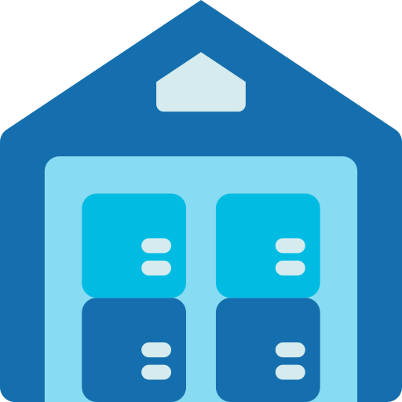

No Locations Added yet
click (+) button to add new Location
No: {{item.name}}
{{item.currenttemp ? item.currenttemp : 5}}°C
{{item.currenttemp ? item.currenttemp : 5}}°C
{{item.currenttemp ? item.currenttemp : 5}}°C
{{item._lastChangedAt | date : 'd MMM, HH:mm'}}